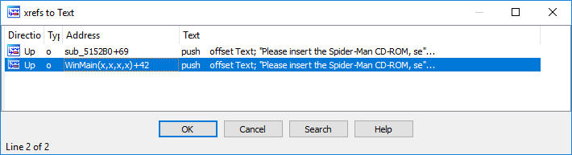
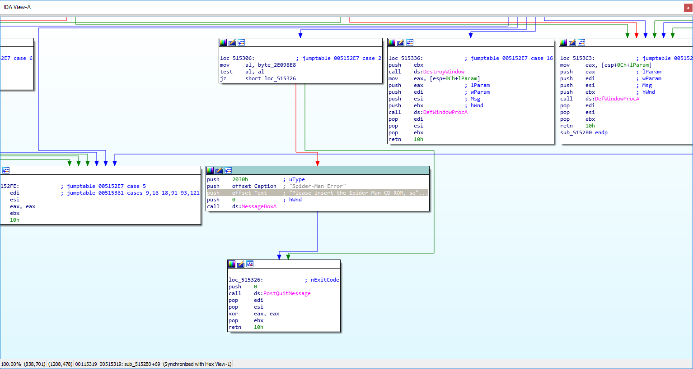
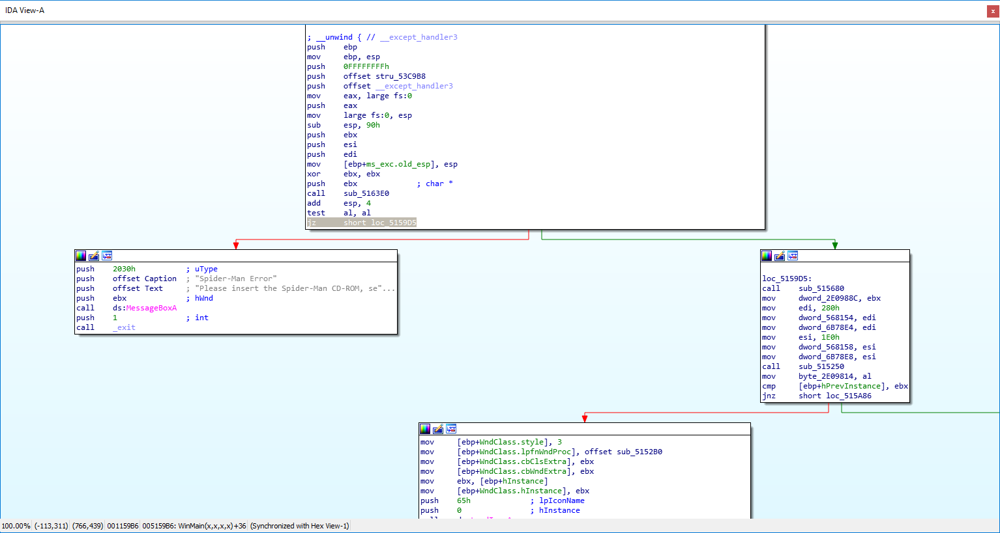
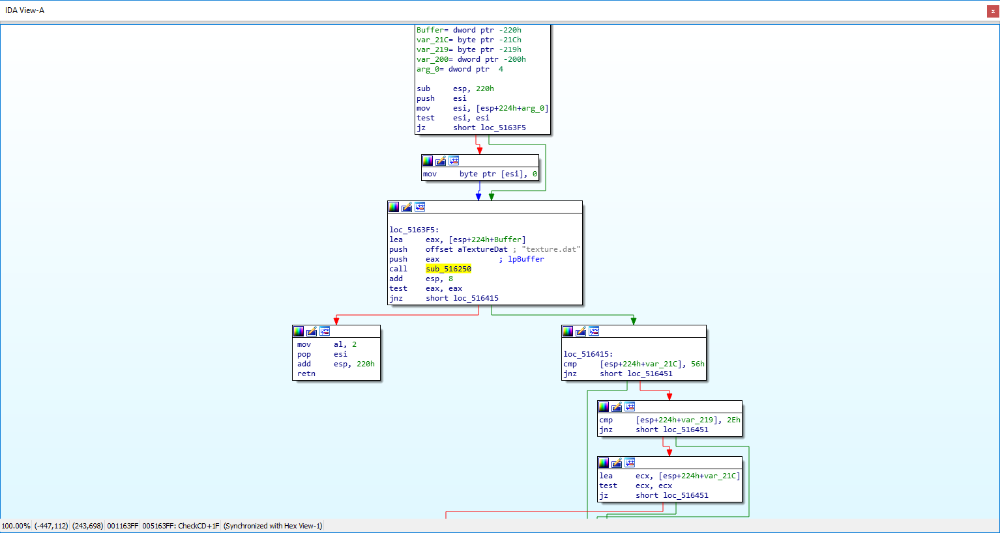
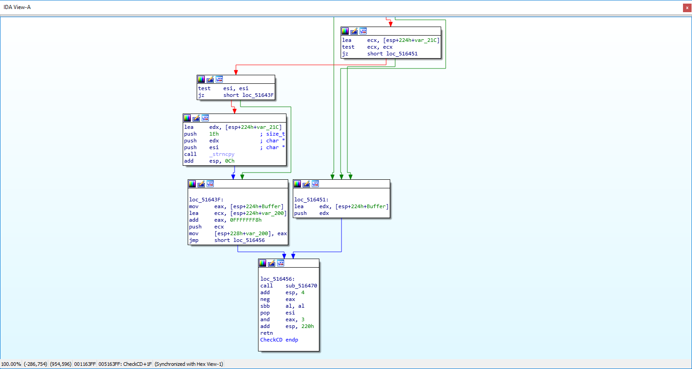

Reversing: Spiderman 2000 - Breaking CD-ROM protection
Prologue
Spiderman was acting wonky with DxWnd after a long time working just fine (it happened to me before but it magically got solved, I think it might be Win10 related since the Win7 VM works perfectly). Not knowing the causes I decided to delete the game and reinstall it. Here comes the fuck up, I had my idb in the game folder. I wasn't able to recover it.
Now I had an uncracked game.
Diving into the problem
Starting the game I was prompted with the message Please insert the Spider-Man CD-ROM, select OK, and restart the game.. Not bad, time to xref on IDA.

What the..? Why there's two of them? The WinMain has you can already guess is the one that prompts when I start the game. The other is from the window handler function.

As you can see IDA could understand that all of those locs are part of a jumptable which indicates me it's switch case and almost all of them lead to DefWindowProcA. If you have done any WinAPI programming you'd know that you call that when you don't want any special handling of certain window interactions and let the OS do it for you.
But which kind of message would make it prompt that message? I left it for now.
Disabling first CD-ROM protection

Whatever the function is doing it must return 0. My approach to this problem was to simply NOP the function call and turn the jz to a jmp. It worked! The game started, I pressed New Game and... black screen, I start to see my desktop and game closes. What the hell was that?
Couple more tries later I find it actually is showing a message box, somewhere in the code it was sending the message code to show that box.
Disabling the second CD-ROM protection
Not knowing what was sending the message I decided to xref the function that I nop'd earlier(let's call it CheckCD) and it was indeed called somewhere else on the program.
int sub_515D80()
{
int result; // eax
signed int v1; // ecx
signed int v2; // edx
BOOL v3; // eax
struct tagMSG Msg; // [esp+0h] [ebp-1Ch]
result = CheckCD(0);// <-- checks for CD here
v1 = 0;
//Useless loop to clog the assembly
do
{
v2 = v1;
v1 += 2;
}
while ( v1 < 30 );
//if-of-death
if ( (_BYTE)result )
{
PostMessageA(hWnd, 0x10u, 0, 0);
byte_2E098E8 = 1;
while ( PeekMessageA(&Msg, hWnd, 0, 0, 0) )
{
v3 = GetMessageA(&Msg, hWnd, 0, 0);
if ( !v3 || v3 == -1 )
break;
if ( Msg.message != 260 && Msg.message != 261 )
{
TranslateMessage(&Msg);
DispatchMessageA(&Msg);
}
}
exit(1);
}
if ( v2 != 28 )//Prevents tampering with the loop
exit(1);
return result;
}
Now we're looking at IDA pseudo, it really helps to understand what's going on. Although it might be unreliable some times it also helps a lot.
Let's discuss what's going on from easier to harder. The loop is used to fill up the assembly view with a bunch of useless instructions so the reverser has an harder time to know what's going on). If someone accidentally deletes messes the loop while patching some instructions v2 won't be 28 so it'll leave.
In my opinion it's kinda clever, back then there was no pseudo-code generation so looking at x86 assembly was the only option which would have made this a lot harder.
CheckCD again, must return 0 or else it will go on the if statement. The first thing about the if statement is the PostMessageA which sends the message 0x10 to the handler, which is WM_CLOSE. Then it processes the messages to force the closure, if it fails then it calls exit. They really want to make sure the game was closed.
By the way, the 260 and 261 are WM_SYSKEY(UP/DOWN) messages, the game is filtering them so the game wouldn't hang if someone as smashing the keyboard.
CheckCD exploration

As you can see there's a call to sub_516250 which does something with texture.dat. What does it do? No idea, it opens it, gets its size, reads the contents and performs some wonky stuff with it. If any of those tasks fails then it returns 0 which makes CheckCD return 2, else it will return a position of the texture.dat buffer.

There's some string copy and finally sub_516470 is called and the result negated and AND'd with 3, which is not a problem since the negation of zero is still zero and 3 AND 0 is still 0.
To end this I'll post some pseudo to make it less boring.
signed int __cdecl sub_516470(_DWORD *a1)
{
if ( !a1 )
return 0x124;
v2 = 0;
for ( i = FindWindowA(ClassName, 0); i; i = FindWindowA(ClassName, 0) )
{
if ( v2 >= 100 )
break;
SendMessageA(i, 0x10u, 0, 0);
++v2;
}
v19 = 0;
while ( 1 )
{
RootPathName = v19 + 'A';
v32 = 58;
v33 = 92;
v34 = 0;
if ( GetDriveTypeA(&RootPathName) == 5 )
{
//Lots of mciSendCommandA
//breaks somewhere
}
v14 = __OFSUB__(v19 + 1, 26);
v13 = v19++ - 25 < 0;
if ( !(v13 ^ v14) )
return 351;
}
return 0;
}
A lot has been cleared and altered so it's easier to understand. First it searches for ClassName windows which are SJE_CdPlayerClass. I'm not sure what they are but I think it's the one from the CD-ROM. You can start the game from there so I guess it makes sense to close them if someone goes into a level. Also it just closes until the 100 window.
After that it searches for CD-ROM drives starting on A. If does find the drive then the thing read from texture.dat is compared with something from the disc, I'm not really sure since I didn't care too much about mci commands, my best bet is that it's checking if the thing read from texture.dat is the same, if it does it breaks and returns 0! Else it returns 351. As before with some bytepatching you can ignore the if statement and always return 0.
Those final weird lines are just IDA Pro """"failed"""" decompilation, I put a lot of quotes since it's correct but the decompiler wasn't able to understand the logic in way to simplify it.
v14 = __OFSUB__(v19 + 1, 26);
v13 = v19++ - 25 < 0;
if ( !(v13 ^ v14) )
return 351;
Comes from here
.text:005166F1 mov eax, [VARIABLE]
.text:005166F5 inc eax
.text:005166F6 cmp eax, 1Ah; 26
.text:005166F9 mov [VARIABLE], eax
.text:005166FD jl loc_5164D1
Concluding, the loop instead of while(1) should be while(v19 < 26) because otherwise it would go beyond the letter Z, the last letter of the alphabet. And that's why pseudocode should always be taken as a grain of salt.